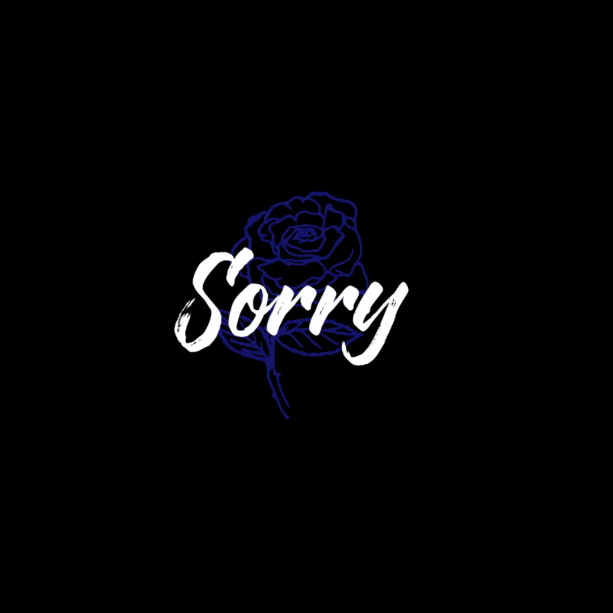

TO 丹 · 一封歌词信
我喜欢你
别太累，我在
《Lost》和《I'm so sorry》，都是我想对你说的。
丹，这两首歌都是我想对你说的。我喜欢你，不是突然，是走了这些年才越来越确定。你现在做的事，我也在做，只是方式不同。我私底下也在努力，眼睛里的血丝、敲得飞快的键盘，都演不出来；就像当时我到底有多喜欢你，也演不出来。我知道你很累，所以不想让你一个人撑。别太累，我想做你停下来能靠一下的人。

I'm so sorry
但我从不后悔遇见你
—— 给你的歌词信